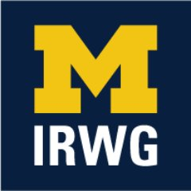
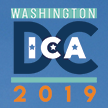

NEWS
Paper published in Feminist Media Studies
Paper accepted for CSCW
Workshop at CSCW 2019
Article in Interactions Magazine
Quoted in WIRED article
Essay on pronoun sharing and disclosure
HCI Guidelines for Gender Equity and Inclusivity now online
|
I was part of a team of researchers, led by Morgan Klaus Scheuerman,
who recently released a set of HCI
Guidelines for Gender Equity and Inclusivity. We hope that this will be a helpful
tool for researchers and writers who want to be respectful and inclusive about gender,
but don't know how.
June 3, 2019
|
Paper accepted for JAMIA
Grant funding received from Institute for Research on Women & Gender
|  |
I received an Institute for Research on Women and Gender
Transgender Health and Empowerment Seed Grant for my proposal
"Researching and Improving New Online Spaces to Support Transgender Wellbeing." This research will be
conducted with community partner Briar Baron and trans time.
April 19, 2019
|
Work-in-progress paper accepted for DIS
Grant funding received from National Center for Institutional Diversity
|
I received a National Center for Institutional Diversity
Grant to Support Research and Scholarship for Social Change for my proposal
"Major Life Events and Social Media in Contemporary Society:
Understanding Social Readjustment for Marginalized Populations." This research will be
conducted with co-PI Nicole Ellison and undergraduate research assistants AJ Carter,
Shanley Corvite, Alexxus Lige, and Brookelyn Wheeler.
March 7, 2019
|
TOCHI paper will be presented at CHI 2019
Workshop paper accepted for CHI 2019
Accepted tenure track position at University of Michigan!
ICA panel accepted
|  |
I will be presenting a paper called "Challenging 'Getting Better' Media Narratives
with Intersectional Transgender Lived Experiences" as part of an accepted panel at
the 2019
International Communication Association (ICA) Conference called “Rethinking (and
Retheorizing) Transgender Media Representation,” organized by Thomas J Billard.
February 21, 2019
|
Short paper published in ASIST Proceedings
Grant funding received from University of Michigan's M-Cubed Program
|
Along with collaborators Shanna Kattari
from UM's School of Social Work and Kristi Gamarel
from UM's School of Public Health, I received a research grant from U-M's M-Cubed
program for the project "Paging Dr. YouTube: Exploring How Trans/Nonbinary
Individuals Use Technology & Social Media to Access Trans Health Information."
December 9, 2018
|
Research featured in Atlantic article
CSCW 2018 Best Paper Honorable Mention!
Quoted in Mashable article
Paper accepted for CSCW
 |
I'm very excited that my first paper from my dissertation research, and my first
solo-authored paper, was accepted for CSCW 2018!
The paper is titled "Social Media
as Social Transition Machinery."
Looking forward to sharing this work with everyone at the conference in November!
August 13, 2018
|
Paper accepted for TOCHI
Piece published in First Monday
Joining University of Michigan!
|
I am excited to announce that I will be joining University of Michigan's
School of Information in Fall 2018 as a President's Postdoctoral Fellow! I'm very
much looking forward to being part of the amazing community of researchers at UMSI
and starting this next phase of my academic career.
April 20, 2018
|
Dissertation defense!
Workshop papers accepted for CHI 2018
James Harvey Scholar Award
 |
I am extremely honored to receive the 2018 James Harvey Scholar Award, for graduate
research on LGBTQ topics!
January 19, 2018
|
|
In the past few years as I’ve been working on my PhD research about gender transition
and social media, I have compiled a list of all of the published research I have
come across about transgender people and digital technology, digital and social media,
and the Internet. The list is available here
and is sortable by author, year, title, item type, or publication venue. I wanted to
share my list so that it can be a resource for scholars who are also studying these
topics, or who may want to start doing research in this area!
January 2, 2018
|
Feature article in XRDS Magazine
Paper accepted for Gender & IT 2018
Paper accepted for CHI 2018
Paper published in TACCESS
Gender & IT 2018 program committee
|
I am serving on the program committee for Gender & IT 2018.
Consider submitting a paper!
The deadline is October 31, and accepted papers will be published in the ACM Digital
Library.
July 21, 2017
|
Paper accepted for New Media & Society
Paper accepted for ICWSM 2017
Queer Internet Studies Symposium 2 Video
Research featured in article on using data analytics for fire prevention
Workshop paper accepted for iConference 2017
CHI 2017 program committee
 |
I am serving on the program committee for CHI 2017's
Late Breaking Work
as an associate chair. Very excited to help with the paper reviewing process!
January 19, 2017
|
Papers accepted for CHI 2017
Blog post on research ethics and visual social media content
Selected for CHI Doctoral Consortium
|
I have been selected to be part of the CHI 2017
Doctoral Consortium! Extremely honored to be a part of this and get feedback on my
disseration work.
December 15, 2016
|
Selected for iConference Doctoral Colloquium
 |
I have been selected to be part of the iConference 2017
Doctoral Colloquium! Excited to visit China and learn from the faculty and students
at the DC.
December 15, 2016
|
Paper published in Social Media + Society
Dissertation proposal defense
|
I'm excited to announce that I passed my dissertation proposal defense on "The Social
Complexities of Transgender Identity Disclosure on Social Network Sites" on October 6! Special thanks
to my committee members: Gillian Hayes, Gloria Mark, Bonnie Ruberg, and Andrea Forte
(Drexel University). I'm excited to move forward into this final phase of my PhD!
October 25, 2016
|
Workshop paper accepted for Group 2016
KDD 2016 Best Student Paper Runner Up!
Paper published in First Monday
Workshop at NordiCHI 2016
 |
I am co-organizing a workshop for NordiCHI
2015 called
HCI and Sensitive Life Experiences, with Daniel Herron, Nazanin Andalibi, Wendy
Moncur, and Elise van den Hoven. The aim of the workshop is to identify current
opportunities for, as well as barriers to, design of social computing systems that
support people during sensitive life events and transitions. Join us in discussing
these topics and building a framework for research and design! The submission deadline
is August 22, 2016.
July 7, 2016
|
Paper accepted for KDD 2016
Research featured in press on using data analytics for fire prevention
Internship at Microsoft Research this summer
Acceptance to Oxford Internet Institute Summer Doctoral Programme
Paper accepted for PLoS ONE
Talk at Trans*Studies Conference
|
My abstract titled "Self-Presentation, Digital Footprints, and the Social
Complexities of Disclosure During Gender Transition on Facebook," co-authored with
Jed Brubaker, Lynn Dombrowski, and Gillian Hayes, was accepted for the
2016
Trans*Studies Conference! I'll be giving a 20 minute talk on this research.
March 26, 2016
|
Submission accepted for Tapia Conference
CHI 2016 Best Paper Honorable Mention!
Talk at INSNA 2016 Sunbelt Conference
 |
My abstract titled "Intersections and Separations in Gender and Race-Focused Social
Media Movements," co-authored with Jürgen Pfeffer and Gillian Hayes, was accepted
for the INSNA 2016 Sunbelt
Conference! I'll be giving a 20 minute talk on this research.
February 2, 2016
|
Workshop paper accepted for CHI 2016
 |
I have a workshop paper accepted for CHI 2016:
"Anonymity, Pseudonymity, and Gender Categorization as Social Justice Issues in HCI",
co-authored with Nazanin Andalibi, has been accepted for the
Exploring Social Justice, Design, and HCI
workshop!
January 31, 2016
|
Workshop paper accepted for CSCW 2016
Papers accepted for CHI 2016
I'm now a PhD Candidate!
|
So excited to announce that I passed my PhD advancement to candidacy yesterday,
and I'm now a PhD Candidate! Thanks so much to my advancement committee for all of
their valuable feedback: Gillian Hayes (chair), Geof Bowker, Gloria Mark, Melissa
Mazmanian, and Tom Boellstorff.
December 4, 2015
|
Poster accepted for iConference 2016
Student Volunteer co-chair for iConference 2016
|
Nazanin Andalibi and I are Student Volunteer (SV) Co-Chairs for
iConference 2016! The conference will be held March 20-23 in Philadelphia. We
are looking for people to sign up for the SV lottery by filling out
this online form by November 30. For more information, please see the
Call for Student Volunteers.
November 6, 2015
|
Paper accepted for CSCW 2016
Rob Kling Memorial Fellowship
|
I am extremely honored to receive the UCI School of Information and Computer Science's
Rob Kling Memorial Fellowship for 2015-2016!
September 10, 2015
|
Paper accepted for Bloomberg Data for Good Exchange
Blog post on Revisiting the Online/Offline Binary
Book review published on The Geek Anthropologist
Data Science for Social Good internship and research at Georgia Tech this summer
NSF GRFP award!
Paper accepted for TACCESS
Paper accepted for Journal of Vocational Rehabilitation
 |
"Mobile Video Modeling for Employment Interviews for Individuals with Autism," an
article that I collaborated on with Gillian Hayes, Erick Custodio, Kathy Nguyen,
Kate Ringland, Rachel Rose Ulgado, Aaron Waterhouse, and Rachel Weiner, was accepted
for publication in
Journal of Vocational Rehabilitation!
March 21, 2015
|
Research featured in press on Facebook's custom gender options
CSCW 2015 Best Paper Honorable Mention!
Workshop papers accepted for CSCW 2015
Panel at CSCW 2015
Papers accepted for CHI 2015
Workshop at CHI 2015
 |
I am co-organizing a workshop for
CHI 2015 called
Between the Lines: Reevaluating the Online/Offline Binary, with Sarah Vieweg,
Michael Massimi, Kenton O'Hara, and Elizabeth Churchill. Is thinking about identities,
spaces, behaviors, and communities as "online" vs. "offline" still useful? Join us
in discussing these topics and building a framework for research and design!
Extended abstract is here.
December 15, 2014
|
Poster accepted for iConference 2015
Workshop at iConference 2015
Paper accepted for CSCW 2015
Faculty Mentor Program (FMP) Fellowship
|
I am excited to announce that I have been awarded a
UC Irvine Faculty Mentor Program (FMP) Fellowship for the 2014-2015 academic
year to work with Dr. Gillian Hayes! This fellowship is designed to increase the
number of students who complete their PhD degree and successfully acquire a faculty
appointment.
June 5, 2014
|
Autism AppJam
|
My team's project
DanceCraft won second place overall at the
UCI Autism AppJam! We also won the Best Social Media Presence award. DanceCraft
is an interactive game that uses the Kinect to incentivize physical activity for
children with autism through dance therapy. My role was developing the user interface.
Team DanceCraft includes Kate Ringland, Mengyao Zhao, Nathan Major, Khalidh Tokhi,
and myself.
May 4, 2014
|
Survey deployment
|
I am looking for people to participate in a research study about gender transition
on social networking sites. Are you a transgender or gender non-conforming person
who has experienced transitioning on a social networking site like Facebook? If so,
please consider sharing your experiences by taking an online survey.
Please share with people in your network who may be willing to help out with this
research. Thanks! https://www.surveymonkey.com/s/transSNS
April 17, 2014
|
NSF GRFP Honorable Mention
I won an infographic contest
Internship at eBay Research Labs this summer
Presentation at AGS Symposium
|
I was selected to participate in the first annual
AGS Symposium at UC Irvine! I will be giving a short presentation of my
research on analyzing sexual health-related language in online personal ads.
March 3, 2014
|
Workshop paper accepted for CHI 2014 Designing Technology for Major Life Events
workshop
Project accepted for Social Media Expo 2014
Paper accepted for CHI 2014
I'm starting my PhD in Informatics at U.C. Irvine!
|


 haimson@umich.edu
haimson@umich.edu @oliverhaimson
@oliverhaimson Oliver Haimson
Oliver Haimson Oliver Haimson
Oliver Haimson